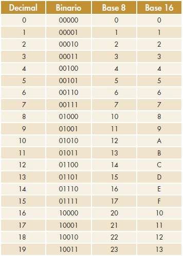
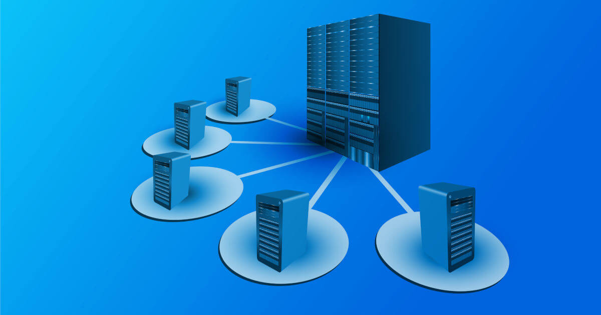
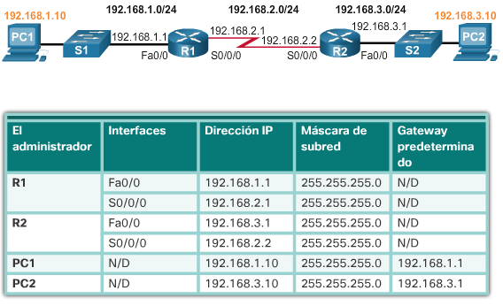

| Componentes de la Comunicación |
|---|
| Sistema de Bases Numéricas |
|---|
|  | El sistema de bases numéricas es un método utilizado para representar números en diferentes sistemas de numeración. Los sistemas de bases numéricas más comunes son el sistema decimal, binario, octal y hexadecimal.
Sistema decimal: Es el sistema numérico más utilizado en el día a día. Se basa en la base 10, lo que significa que utiliza diez símbolos distintos (0 al 9) para representar números. Cada posición en un número decimal tiene un valor multiplicativo de diez. Sistema binario: Es el sistema utilizado en las computadoras y la electrónica digital. Se basa en la base 2, lo que significa que utiliza dos símbolos distintos (0 y 1) para representar números. Cada posición en un número binario tiene un valor multiplicativo de dos. Sistema octal: Es un sistema numérico que utiliza la base 8. Utiliza ocho símbolos distintos (0 al 7) para representar números. Cada posición en un número octal tiene un valor multiplicativo de ocho. Sistema hexadecimal: Es un sistema numérico que utiliza la base 16. Utiliza dieciséis símbolos distintos (0 al 9 y las letras A a F) para representar números. Los símbolos A, B, C, D, E y F se utilizan para representar los valores del 10 al 15. Cada posición en un número hexadecimal tiene un valor multiplicativo de dieciséis. |
| Introducción a las Redes |
|---|
| La introducción a redes se refiere al estudio de los fundamentos básicos de las redes de computadoras. Las redes de computadoras son sistemas interconectados que permiten la comunicación y el intercambio de información entre diferentes dispositivos, como computadoras, servidores, dispositivos móviles, impresoras, entre otros.
En el contexto de las redes, se exploran conceptos clave como: Topología de red: Se refiere a la estructura física o lógica de una red, que determina cómo están conectados los dispositivos y cómo se transmite la información. Protocolos de red: Son conjuntos de reglas y normas que permiten la comunicación efectiva entre los dispositivos de una red. Los protocolos definen cómo se establece la conexión, cómo se envían y reciben los datos, y cómo se manejan los errores. |
|
Modelos de referencia: Los modelos de referencia, como el modelo OSI (Open Systems Interconnection) o el modelo TCP/IP, proporcionan un marco conceptual para comprender cómo funcionan las redes. Estos modelos dividen el proceso de comunicación en capas, cada una con funciones específicas.
Dispositivos de red: Los dispositivos de red incluyen routers, switches, hubs, modems y puntos de acceso, entre otros. Estos dispositivos se utilizan para dirigir el tráfico de red, interconectar redes y permitir la conectividad entre los dispositivos de una red. Seguridad de red: La seguridad de red es un aspecto fundamental en el diseño y funcionamiento de las redes. Involucra medidas y tecnologías para proteger la información y los sistemas de ataques y accesos no autorizados. Tipos de redes: Existen diferentes tipos de redes, como LAN (red de área local), WAN (red de área amplia), MAN (red de área metropolitana), WLAN (red de área local inalámbrica) e Internet. Cada tipo de red tiene características y alcances específicos. La introducción a redes proporciona los conocimientos básicos necesarios para comprender cómo funcionan las redes de computadoras y cómo se establece la comunicación entre los dispositivos. Esto sienta las bases para explorar temas más avanzados relacionados con la configuración, administración y solución de problemas en redes. |
| Implementación de Redes |
|---|
| La implementación de redes se refiere al proceso de configurar y establecer una red de computadoras en un entorno específico. Implica la instalación y configuración de dispositivos de red, como routers, switches, puntos de acceso inalámbricos y cables, así como la configuración de software y protocolos de red.
A continuación, se describen los pasos principales involucrados en la implementación de redes: 1. Diseño de red: Antes de comenzar la implementación, es importante realizar un diseño de red adecuado. Esto implica determinar los requisitos de la red, como el tamaño, el alcance, la topología y los protocolos que se utilizarán. También se deben considerar aspectos de seguridad y escalabilidad. 2. Adquisición de equipos: Una vez que se haya realizado el diseño de red, se deben adquirir los dispositivos de red necesarios. Esto puede incluir routers, switches, cables de red, tarjetas de red, entre otros. Es importante seleccionar equipos de calidad y compatibles con los requisitos de la red. |  |
|  | 3. Configuración de dispositivos: Una vez que los dispositivos estén conectados físicamente, se debe realizar la configuración de los mismos. Esto implica asignar direcciones IP, configurar protocolos de enrutamiento, establecer políticas de seguridad y realizar otras configuraciones específicas de cada dispositivo.
4. Configuración de servicios de red: Además de la configuración de dispositivos individuales, es necesario configurar los servicios de red, como DHCP (Dynamic Host Configuration Protocol) para asignar direcciones IP automáticamente, DNS (Domain Name System) para resolver nombres de dominio, y otros servicios que sean necesarios para el funcionamiento de la red. |
| Manejo de octetos para la implementación de Redes |
|---|
|
El manejo de octetos es fundamental en la implementación de redes, ya que la mayoría de los protocolos de red y direcciones IP se basan en la representación de datos en forma de octetos.
Un octeto es una secuencia de 8 bits, que puede representar valores numéricos del 0 al 255 (2^8 = 256 posibles combinaciones). En el contexto de las direcciones IP, un octeto se utiliza para representar una parte de la dirección IP, ya sea en la parte de la red o en la parte del host. En la notación decimal con puntos (IPv4), las direcciones IP se dividen en cuatro octetos separados por puntos. Por ejemplo, una dirección IP típica puede ser "192.168.0.1", donde cada uno de los cuatro octetos tiene un valor decimal entre 0 y 255. |
 |
|
El manejo de octetos es importante para realizar operaciones de enrutamiento, subneteo y configuración de direcciones IP. Al trabajar con direcciones IP, es común realizar operaciones binarias, como AND, OR y XOR, en los octetos individuales para determinar la red a la que pertenece una dirección IP o para realizar filtrado de paquetes en un router.
Además, el manejo de octetos es esencial para comprender y configurar máscaras de subred, que son utilizadas para dividir una red IP en subredes más pequeñas. Las máscaras de subred también se representan en forma de octetos, donde los bits en 1 indican la parte de la red y los bits en 0 indican la parte del host. En resumen, el manejo de octetos es fundamental en la implementación de redes para comprender y manipular direcciones IP, realizar operaciones de enrutamiento y subneteo, y configurar adecuadamente los dispositivos de red. |